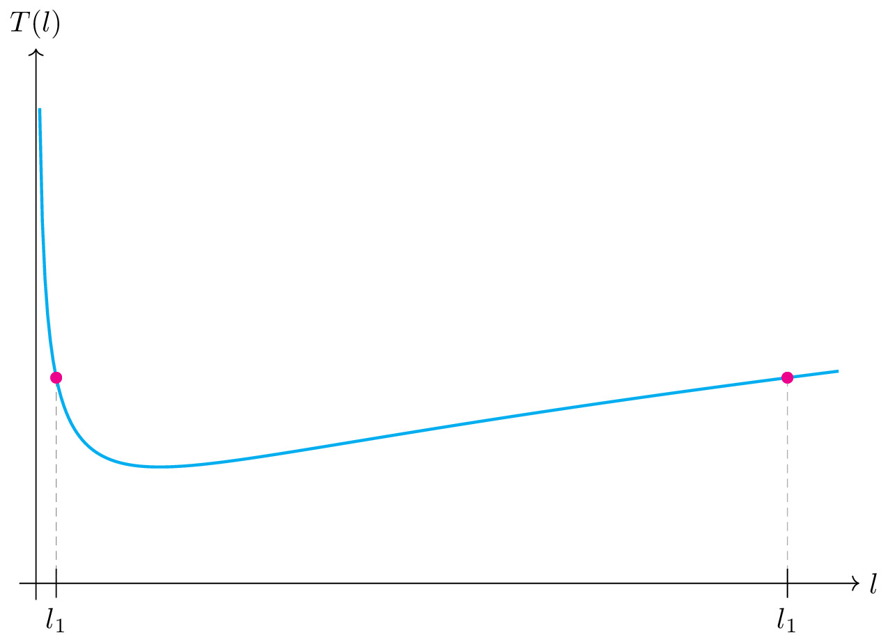

pre.tex
\documentclass[tikz]{standalone}\input{pre.tex}\begin{document}\begin{tikzpicture}
\draw[->] (0,-0.2) -- (0,6.5) node[above]{$T(l)$};
\draw[->] (-0.2,0) -- (10,0) node[right]{$l$};
\draw[variable=\l, cyan,line width=1pt] plot[domain=0.03:6.5, samples=300, ] (1.5*\l,{sqrt((1+\l*\l)/\l)});
\fill[magenta] (0.246,2.5) coordinate (1) circle (2pt);
\fill[magenta] (9.128,2.5) coordinate (2) circle (2pt);
\draw[axis, very thin] (1) -- ++(0,-2.5) coordinate (l1);
\draw[axis, very thin] (2) -- ++(0,-2.5) coordinate (l2);
\fill[magenta] (0.246,2.5) circle (2pt);
\fill[magenta] (9.128,2.5) circle (2pt);
\draw ($(l1)+(0,5pt)$) -- ($(l1)-(0,5pt)$) node[below]{$l_1$};
\draw ($(l2)+(0,5pt)$) -- ($(l2)-(0,5pt)$) node[below]{$l_1$};
\end{tikzpicture}\end{document}